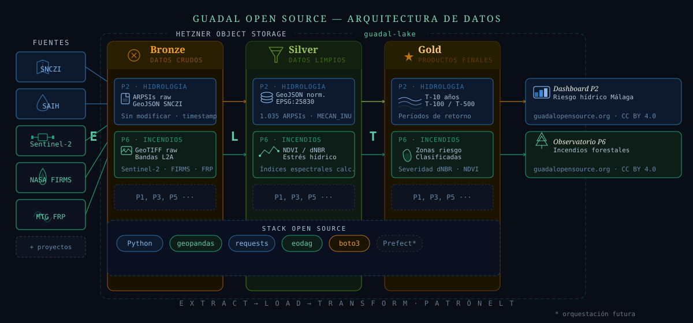

Transparencia · Infraestructura · Datos
Describimos de forma pública cómo recogemos, procesamos y publicamos los datos que usamos en cada proyecto. Del dato crudo al producto final, todo es trazable y auditable.

Clic en el diagrama para ver a pantalla completa
Cómo fluyen los datos
Descargamos los datos directamente de las fuentes oficiales, sin ninguna modificación.
Los datos crudos se cargan en Bronze antes de cualquier transformación. El dato original queda preservado e inmutable.
El procesamiento ocurre dentro del lago: Bronze → Silver → Gold. Cada transformación está documentada en código abierto.
Capas de calidad
Los datos exactamente como llegan de las fuentes. Sin modificar. Inmutables. Garantía de trazabilidad.
Datos normalizados, reproyectados y filtrados. Todo cambio es reproducible desde Bronze.
Datos listos para dashboards y publicaciones. Resultado de análisis concretos sobre Silver.
Herramientas
Lenguaje base de todos los pipelines de ingesta y transformación.
Procesamiento de datos geoespaciales, reproyecciones y análisis de geometrías.
Descarga de datos desde APIs REST: SNCZI, SAIH y otras fuentes oficiales.
Descarga de imágenes de satélite Sentinel-2 desde Copernicus Data Space.
Cliente Python para S3-compatible. Acceso al lago de datos en Hetzner Object Storage.
Orquestación y programación automática de pipelines cuando los proyectos escalen.
El stack es abierto. Cada proyecto puede incorporar las herramientas más adecuadas para sus fuentes de datos, manteniendo el patrón ELT y la arquitectura medallón.
Todos los scripts de ingesta, transformación y visualización se publican en GitHub bajo licencia MIT. Cualquiera puede inspeccionar, reproducir o mejorar el proceso.
Los datasets procesados se publican bajo CC BY 4.0. Pueden descargarse, analizarse y reutilizarse libremente citando la fuente.
Los datos crudos en Bronze nunca se sobreescriben. Cualquier análisis puede ser verificado volviendo al dato original.
Cada transformación está documentada en código. El flujo de Bronze a Gold es completamente auditable y reproducible por terceros.
El lago de datos reside en servidores europeos (Hetzner, Alemania). Los datos no salen de la Unión Europea.
La arquitectura está diseñada para crecer. Cualquier proyecto puede añadir sus fuentes y transformaciones manteniendo el mismo patrón.
Todo el código está disponible en github.com/guadalopensource/guadal-data-pipelines. Los datasets procesados se publican en los repositorios de cada proyecto bajo CC BY 4.0.